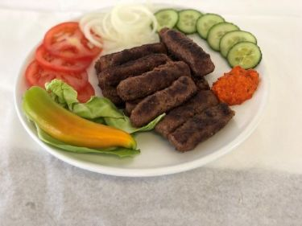

Ćevapčići

Zutaten
500 g Rinderhackfleisch,
200 g Lammhackfleisch,
1 Zwiebel (fein gehackt),
2 Knoblauchzehen (zerdrückt),
1 TL Paprikapulver (mild oder scharf, je nach Geschmack),
1 TL Salz (nach Geschmack),
1/2 TL schwarzer Pfeffer,
1/2 TL Backpulver,
100 ml Wasser,
1 EL Olivenöl,
1 TL getrockneter Thymian
Zubereitung
Fleischmischung vorbereiten:Rinder- und Lammhackfleisch in einer großen Schüssel vermengen. Die Zwiebel fein hacken und mit dem Knoblauch, Paprikapulver, Salz, Pfeffer und Thymian zum Fleisch hinzufügen. Alles gut durchmengen, bis eine gleichmäßige Masse entsteht.
Teig kneten:Das Backpulver in das Wasser auflösen und langsam zu der Fleischmischung hinzufügen. Mit den Händen kräftig durchkneten, bis eine elastische, gut bindende Masse entsteht. Falls der Teig zu fest ist, noch etwas Wasser zugeben.
Ćevapčići formen:Aus der Mischung kleine, längliche Röllchen (Ćevapčići) formen, etwa 8–10 cm lang und 2–3 cm dick.
Grillen:Die Ćevapčići auf einem Grill oder in einer Pfanne bei mittlerer Hitze von allen Seiten goldbraun und durchgegart grillen. Dies dauert etwa 8–10 Minuten, je nach Größe der Ćevapčići.
Servieren:Die fertigen Ćevapčići mit frischem Fladenbrot, Zwiebeln und Ajvar servieren. Optional kann auch ein frischer Salat dazu gereicht werden.